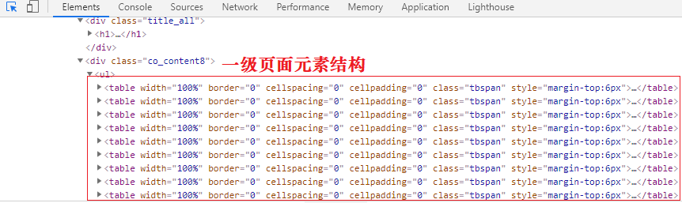
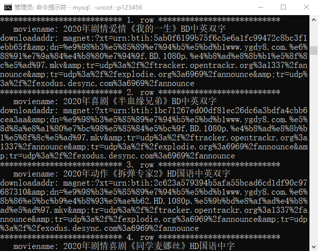

Python爬虫：抓取多级页面数据
前面讲解的爬虫案例都是单级页面数据抓取，但有些时候，只抓取一个单级页面是无法完成数据提取的。本节讲解如何使用爬虫抓取多级页面的数据。
在爬虫的过程中，多级页面抓取是经常遇见的。下面以抓取二级页面为例，对每级页面的作用进行说明：
一级页面以

图1：Python爬虫多级页面抓取
点击二级页面进入详情页，通过开发者工具分析想要数据的网页元素，即电影名称，和下载链接，其正则表达式如下：
对于本节案例来说，电影天堂网站每天都会更新内容，因此编写一个增量抓取的爬虫程序是非常合适的。
那么要如何判断爬虫程序是否已抓取过二级页面的 url 呢？其实，当您第一次运行爬虫程序时，爬虫会将所有的 url 抓取下来，然后将这些 url 放入数据库中。为了提高数据库的查询效率，您可以为每一个 url 生成专属的“指纹”。当网站更新后，第二次运行爬虫程序时，程序只会对数据库中不存在的指纹进行抓取。
在爬虫的过程中，多级页面抓取是经常遇见的。下面以抓取二级页面为例，对每级页面的作用进行说明：
- 一级页面提供了获取二级页面的访问链接。
- 二级页面作为详情页用来提取所需数据。
一级页面以
<a>标签的形式链接到二级页面，只有在二级页面才可以提取到所需数据。
多级页面分析
下面以电影天堂（点击访问） 2020 新片精品为案例进行讲解，将每部影片的名称，以及下载链接抓取下来。首先点击“更多”进入一级页面，如下图所示：图1：Python爬虫多级页面抓取
1) 寻找url规律
通过简单分析可以得知一级与二级页面均为静态页面，接下来分析 url 规律，通过点击第 1 页，第 2 页 ...，其规律如下：第1页 ：https://www.dytt8.net/html/gndy/dyzz/list_23_1.html 第2页 ：https://www.dytt8.net/html/gndy/dyzz/list_23_2.html 第n页 ：https://www.dytt8.net/html/gndy/dyzz/list_23_n.html
2) 确定正则表达式
通过元素审查可知一级页面的元素结构如下：

图2：页面元素分析
其正则表达式如下：
图2：页面元素分析
<table width="100%".*?<td width="5%".*?<a href="(.*?)".*?ulink">.*?</table>
点击二级页面进入详情页，通过开发者工具分析想要数据的网页元素，即电影名称，和下载链接，其正则表达式如下：
<div class="title_all"><h1><font color=#07519a>(.*?)</font></h1></div>.*?<div><a href="(.*?)">.*?</a>
爬虫增量抓取
爬虫是一种效率很低的程序，非常消耗计算机资源。对于聚焦爬虫程序而言，需要每天对特定的网站进行数据抓取，如果每次都去抓取之前已经抓取过的数据，就会白白消耗了时间和资源。而增量爬虫是指通过监测网站更新的情况，只抓取最新数据的一种方式，这样就大大降低了资源的消耗。对于本节案例来说，电影天堂网站每天都会更新内容，因此编写一个增量抓取的爬虫程序是非常合适的。
那么要如何判断爬虫程序是否已抓取过二级页面的 url 呢？其实，当您第一次运行爬虫程序时，爬虫会将所有的 url 抓取下来，然后将这些 url 放入数据库中。为了提高数据库的查询效率，您可以为每一个 url 生成专属的“指纹”。当网站更新后，第二次运行爬虫程序时，程序只会对数据库中不存在的指纹进行抓取。
程序代码实现
1) 建库建表
将抓取的数据的存放至 MySQL 数据库，需要先进行建库建表操作。注意，这里需要将 url 指纹单独存放在一张表中，如下所示：create database movieskydb charset utf8; use movieskydb; create table request_finger( finger char(60) )charset=utf8; create table movieinfo( moviename varchar(300), downloadaddr varchar(600) )charset=utf8;
2) url指纹生成
您可以使用 Python 内置模块 md5 来生成加密“指纹”，如下所示。#导入模块 from hashlib import md5 #待加密的url url="https://www.dytt8.net/html/gndy/dyzz/20210226/61131.html" # 生成MD5对象 secret = md5() # 加密url secret.update(url.encode()) # 提取十六进制的加密串 finger = secret.hexdigest() print(finger)输出结果：
2d5e46ee52756e8ae59c9ba42230b883
3) 程序完整代码
# -*- coding: utf-8 -*-
from urllib import request
import re
import time
import random
import pymysql
from hashlib import md5
from ua_info import ua_list
import sys
class MovieSkySpider(object):
def __init__(self):
self.url = 'https://www.dytt8.net/html/gndy/dyzz/list_23_{}.html'
self.db = pymysql.connect(
'localhost','root','123456','movieskydb',
charset='utf8'
)
self.cursor = self.db.cursor()
# 1.请求函数
def get_html(self, url):
headers = {'User-Agent': random.choice(ua_list)}
req = request.Request(url=url, headers=headers)
res = request.urlopen(req)
# 本网站使用gb2312的编码格式
html = res.read().decode('gb2312', 'ignore')
return html
# 2.正则解析函数
def re_func(self,re_bds,html):
pattern = re.compile(re_bds,re.S)
r_list = pattern.findall(html)
return r_list
# 3.提取数据函数
def parse_html(self,one_url):
# 调用请求函数，获取一级页面
one_html = self.get_html(one_url)
re_bds = '<table width="100%".*?<td width="5%".*?<a href="(.*?)".*?ulink">.*?</table>'
# 获取二级页面链接
# link_list: ['/html//html/gndy/dyzz/20210226/61131.html','/html/xxx','','']
link_list = self.re_func(re_bds,one_html)
for link in link_list:
# 判断是否需要爬取此链接
# 1.获取指纹
# 拼接二级页面url
two_url = 'https://www.dytt8.net' + link
s = md5()
#加密url，需要是字节串
s.update(two_url.encode())
# 生成指纹，获取十六进制加密字符串，
finger = s.hexdigest()
# 2.通过函数判断指纹在数据库中是否存在
if self.is_hold_on(finger):
# 抓取二级页面数据
self.save_html(two_url)
time.sleep(random.randint(1,2))
# 抓取后，把想用的url专属指纹存入数据库
ins = 'insert into request_finger values (%s)'
self.cursor.execute(ins,[finger])
self.db.commit()
else:
sys.exit('更新完成')
# 4.判断链接是否已经抓取过
def is_hold_on(self,finger):
# 查询数据库
sql='select finger from request_finger where finger=%s'
# execute()函数返回值为受影响的行数（即0或者非0）
r = self.cursor.execute(sql,[finger])
# 如果为0表示没有抓取过
if not r:
return True
# 5.解析二级页面，获取数据（名称与下载链接）
def save_html(self,two_url):
two_html = self.get_html(two_url)
re_bds = '<div class="title_all"><h1><font color=#07519a>(.*?)</font></h1> \
</div>.*?<a.*?href="(.*?)".*?>.*?style="BACKGROUND-COLOR:.*?</a>'
# film_list: [('name','downloadlink'),(),(),()]
film_list = self.re_func(re_bds,two_html)
print(film_list)
# 插入数据库
sql = 'insert into movieinfo values(%s,%s)'
#L = list(film_list[0])
self.cursor.executemany(sql,film_list)
self.db.commit()
#主函数
def run(self):
# 二级页面后四页的正则表达式略有不同，需要重新分析
for i in range(1,4):
url = self.url.format(i)
self.parse_html(url)
if __name__ == '__main__':
spider = MovieSkySpider()
spider.run()
若要查询数据库存储数据，执行以下命令即可：
mysql> select * from movieinfo\G输出如下，如下图所示：

图3：MySQL数据库存储数据
在二级页面提取数据时要注意该页面的类型。该网站在二级页面使用了两种类型的网页结构，另外一种页面结构的正则表达式如下所示：
图3：MySQL数据库存储数据
<div class="title_all"><h1><font color=#07519a>(.*?)</font></h1></div>.*?<td style="WORD-WRAP.*?>.*?>(.*?)</a>若要抓取此类页面的数据，需要更换二级页面正则表达式。
关注公众号「站长严长生」，在手机上阅读所有教程，随时随地都能学习。内含一款搜索神器，免费下载全网书籍和视频。

微信扫码关注公众号